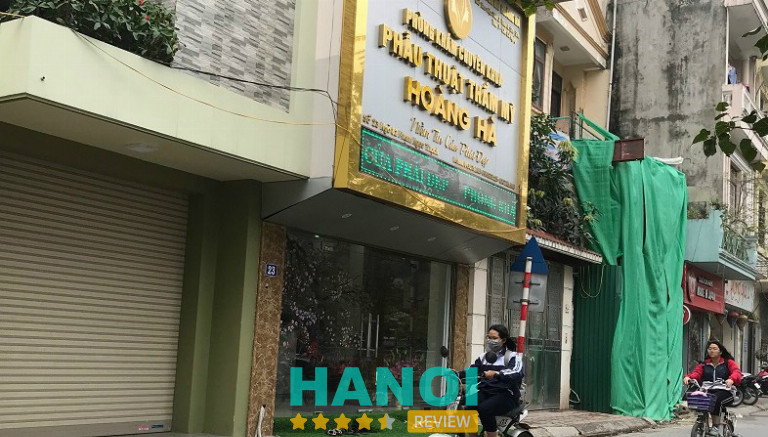
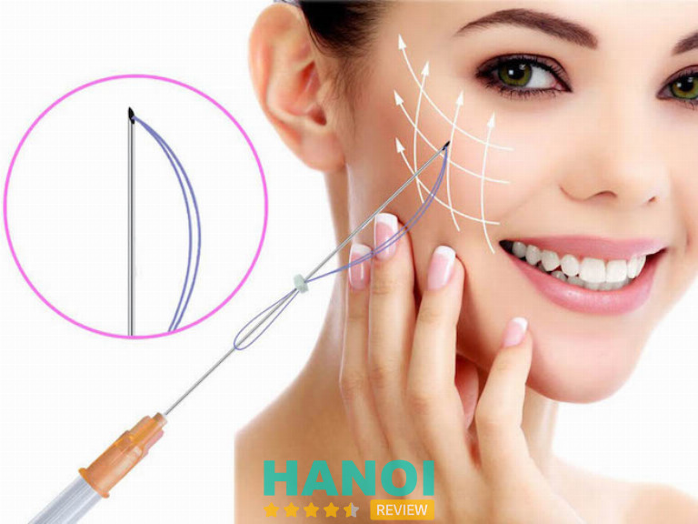

10 Thẩm mỹ viện căng chỉ trẻ hóa da mặt tại Hà Nội đẹp, uy tín
Căng chỉ trẻ hóa da mặt, còn được gọi là “căng chỉ không phẫu thuật” là một phương pháp thẩm mỹ được sử dụng để cải thiện độ đàn hồi, săn chắc của da mặt và cổ, giúp khách hàng nhanh chóng lấy lại làn da căng bóng để duy trì tuổi xuân. Do đó, nó được ưa chuộng và sử dụng ngày càng phổ biến. Bài viết dưới đây của HaNoiReview sẽ gợi ý cho bạn 10 thẩm mỹ viện căng chỉ trẻ hóa da mặt tại Hà Nội làm đẹp, uy tín để bạn lưu lại và cân nhắc, tham khảo.
Top 10 Thẩm mỹ viện căng chỉ trẻ hóa da mặt tại Hà Nội làm đẹp, chất lượng
Phương pháp căng chỉ trẻ hóa da mặt là thủ thuật làm đẹp thông dụng, giúp da căng bóng, giảm nếp nhăn, giảm tình trạng chảy xệ ở vùng cằm và cổ, tạo hiệu ứng trẻ hóa tự nhiên cho khuôn mặt mà không cần can thiệp phẫu thuật. Tuy nhiên, quá trình này có thể xảy ra biến chứng nếu không được thực hiện bởi các bác sĩ thẩm mỹ có tay nghề cao, dưới sự hỗ trợ của các loại máy móc, thiết bị hiện đại.
Việc căng chỉ trẻ hóa da mặt sẽ đảm bảo an toàn và đạt được kết quả như mong muốn nếu chọn được thẩm mỹ viện uy tín để tiến hành. Do đó, bài viết dưới đây của HaNoiReview sẽ gợi ý cho bạn 10 thẩm mỹ viện đáng tin cậy, có đội ngũ bác sĩ thẩm mỹ lành nghề nhất Hà Nội và nhận được nhiều sự tin tưởng của các “tín đồ” làm đẹp.
Thẩm mỹ viện Xuân Hương
Phương pháp căng chỉ trẻ hóa da mặt tại Thẩm mỹ viện Xuân Hương là quy trình thẩm mỹ tiên tiến nhằm cải thiện độ đàn hồi và nâng cơ cho da mặt mà không cần can thiệp bằng phương pháp phẫu thuật. Do đó phương pháp này nhận được sự ủng hộ của các “tín đồ” làm đẹp.
Trước khi tiến hành can thiệp chuyên sâu, bao giờ Thẩm mỹ viện Xuân Hương cùng thực hiện khâu tư vấn, thăm khám bước đầu vô cùng kỹ lưỡng cho khách hàng. Trong quá trình này, đội ngũ chuyên gia sẽ lắng nghe và đánh giá tình trạng da của từng khách hàng, cũng như mục tiêu và mong muốn của họ về phương pháp để từ đó đưa ra những lựa chọn thích hợp.
Sau khi có phác đồ cụ thể, quy trình căng chỉ trẻ hóa da mặt mới được tiến hành. Các chuyên gia sẽ sử dụng loại chỉ y tế mỏng để tiêm vào da thông qua các kim nhỏ. Chỉ này có khả năng kích thích sản xuất collagen và giúp cải thiện độ đàn hồi của da, hiệu ứng nâng da và cải thiện đường viền cơ mặt, giảm nếp nhăn, nâng cơ vùng cằm.
Sau khi chỉ được đặt vào đúng vị trí, chỉ thừa thường sẽ được cắt bỏ. Sau khi thực hiện căng chỉ, da có thể sưng nhẹ và đỏ. Tuy nhiên, tình trạng này sẽ giảm đi nhanh chóng. Kết quả trực tiếp từ căng chỉ nâng cơ mặt có thể nhìn thấy ngay và duy trì được trong thời gian dài.
Phương pháp căng chỉ trẻ hóa da mặt tại Thẩm mỹ viện Xuân Hương là một quy trình thẩm mỹ tiên tiến và an toàn, được thực hiện bởi đội ngũ chuyên gia có kinh nghiệm lâu năm, được hỗ trợ bởi các trang thiết bị hiện đại. Do đó, nếu bạn chưa biết nên lựa chọn thẩm mỹ viện nào để thực hiện thì đơn vị này chính là gợi ý rất đáng cân nhắc.
Thông tin liên hệ:
- Địa chỉ: 22 Triệu Việt Vương, Q. Hai Bà Trưng, Hà Nội
- Điện thoại: 028 3856 5555
- Email: thammyxuanhuong@gmail.com
- Website: thammyxuanhuong.com
Thẩm mỹ viện Hồng Kông
Ra đời từ năm 1994, Thẩm mỹ Hồng Kông, địa chỉ 51 Hàng Gà, Hà Nội là một trong những địa chỉ làm đẹp không phẫu thuật đầu tiên và uy tín nhất nhì khu vực, được đông đảo khách hàng tin tưởng lựa chọn.
Đơn vị này luôn tiên phong ứng dụng các công nghệ hiện đại, đời mới của các nước có ngành thẩm mỹ phát triển trên thế giới như: Anh, Pháp, Mỹ, Israel, Italia, Tây Ban Nha để đáp ứng nhu cầu làm đẹp ngày càng cao của chị em phụ nữ. Không những thế nơi đây còn quy tụ đội ngũ chuyên gia làm đẹp tên tuổi, được đào tạo tại các môi trường uy tín, chuyên nghiệp.
Gần 25 năm qua, Thẩm mỹ Hồng Kông đã tạo dựng được vị thế và đẳng cấp của mình trong ngành thẩm mỹ Việt Nam cũng như tạo được niềm tin yêu trong lòng khách hàng. Cơ sở này cung cấp đầy đủ các dịch vụ làm đẹp từ không phẫu thuật đến can thiệp phẫu thuật, đáp ứng đa dạng nhu cầu làm đẹp của khách hàng.
Dịch vụ căng chỉ trẻ hóa da mặt tại Thẩm mỹ viện Hồng Kông luôn tuân theo quy trình bài bản, an toàn nhằm cải thiện độ đàn hồi và nâng cơ cho da mặt mà không cần tiến hành phẫu thuật. Phương pháp căng chỉ da mặt tại đây luôn ưu tiên sử dụng các sợi chỉ y tế mỏng và tự hấp thụ, được tiêm vào da thông qua các kim nhỏ để kích thích sản xuất collagen và cải thiện độ đàn hồi cho da.
Nhờ được thực hiện bởi các bác sĩ thẩm mỹ hàng đầu mà quá trình này diễn ra hoàn toàn êm ái, nhẹ nhàng, không tốn thời gian hồi phục. Sau can thiệp, cơ sở sẽ cho khách hàng tự về nhà nghỉ ngơi và hướng dẫn cách chăm sóc sao cho nhanh giảm sưng đỏ và mang đến kết quả tốt nhất.
Chính sự nhiệt tình, chu đáo của toàn bộ đội ngũ Thẩm mỹ viện Hồng Kông mà khách hàng luôn tin tưởng, ủng hộ khi có nhu cầu làm đẹp. Cơ sở này lựa chọn lý tưởng cho những ai đang có nhu cầu tìm kiếm thẩm mỹ viện căng chỉ trẻ hóa da mặt tại Hà Nội.
Thông tin liên hệ:
- Địa chỉ: 1 Hàng Gà, Q. Hoàn Kiếm, Hà Nội
- Điện thoại:1800 6386
- Email: cskh@thammyhongkong.vn
- Website: thammyhongkong.vn
Viện thẩm mỹ ANVEE
Trong bối cảnh ngày công nghệ làm đẹp ngày càng đòi hỏi những tiêu chuẩn khắt khe, nhu cầu làm đẹp của chị em phụ nữ càng tăng cao hơn bao giờ hết. Thế nhưng, không phải ai cũng có cơ hội tiếp cận với các dịch vụ làm đẹp chất lượng cao. Thấu hiểu được điều đó, hơn 20 năm qua, Viện thẩm mỹ ANVEE đã mang đến những dịch vụ làm đẹp công nghệ cao với chi phí tiết kiệm đến gần hơn với chị em phụ nữ.
Hoạt động với sứ mệnh nâng tầm nhan sắc Việt, đơn vị này luôn kiên trì tiếp cận các đối tượng trẻ, nhất là phụ nữ nông thôn, miền núi nhằm mang đến cho họ cơ hội thay đổi ngoại hình, tìm lại sự tự tin vốn có thông qua nhan sắc xinh đẹp rạng ngời. Với nguyện vọng cao cả đó, cơ sở đã hoạt động bền bỉ suốt nhiều năm qua.
Phương pháp căng chỉ trẻ hóa da mặt là một trong những dịch vụ chủ lực tại Viện thẩm mỹ ANVEE, được nhiều chị em phụ nữ tìm đến để nâng tầm nhan sắc, tìm lại vẻ ngoài tươi trẻ, tràn đầy sức sống. Được các bác sĩ thực hiện trong môi trường vô trùng an toàn tuyệt đối để cải thiện làn da chảy xệ, lão hóa mà không cần phải phẫu thuật xâm lấn phức tạp.
Ở phương pháp này, đơn vị sử dụng sử dụng chỉ sinh học (được làm từ Polymer như PDO, PCL hoặc chỉ làm từ Collagen) để cấy vào bên dưới da nhằm cải thiện vùng da bị lão hóa. Đây là loại chỉ sinh học tự tiêu siêu an toàn và lành tính đối với cơ thể con người, được đan chéo thành hình caro để giúp nâng đỡ vùng cơ bị chảy xệ.
Quy trình này được thực hiện bởi đội ngũ bác sĩ thẩm mỹ có tay nghề cao nên tuyệt đối sẽ không gây ảnh hưởng đến các dây thần kinh, hạn chế tối đa việc gây phù nề, sưng viêm và đau nhức cho da mặt. Giúp khách hàng loại bỏ được hoàn toàn những vết nhăn trên trán, rãnh cười, bọng mắt, vết chân chim,…
Đội ngũ y bác sĩ có trình độ chuyên môn cao dưới sự hỗ trợ hết mình của hệ thống máy móc, trang thiết bị hiện đại cùng chế độ chăm sóc hậu phẫu thuật đạt tiêu chuẩn 5 sao, ANVEE chính là thẩm mỹ viện căng chỉ trẻ hóa da mắt lý tưởng mà khách hàng không nên bỏ lỡ.
Thông tin liên hệ:
- Địa chỉ: 19 Ngõ Huế, Q. Hai Bà Trưng, Hà Nội
- Điện thoại: 098 111 9011
- Email: vienthammyanvee@gmail.com
- Website: anvee.vn
- Fanpage: FB.com/anveebeautyclinic
Thẩm mỹ Bệnh viện Hồng Ngọc
Với lịch sử 20 năm hình thành và phát triển, Thẩm mỹ Bệnh viện Hồng Ngọc vẫn luôn khẳng định vị trí top đầu của mình trong lĩnh vực chăm sóc sắc đẹp. Tự hào là 1 trong 3 cơ sở được Bộ Y Tế cấp phép hoạt động trong lĩnh vực thẩm mỹ tạo hình, đơn vị thực hiện thành thạo từ các ca đại phẫu lớn như nâng ngực, hút mỡ bụng, nâng mũi, tạo hình thành bụng đến những ca không xâm lấn như nhấn mí, căng chỉ trẻ hóa da mặt,…
Quy trình thực hiện phương pháp căng chỉ trẻ hóa da mặt tại Thẩm mỹ Bệnh viện Hồng Ngọc được thực hiện chỉn chu với đầy đủ các bước sau:
- Bước 1: Bác sĩ sẽ tiến hành thăm khám tình trạng lão hóa của da và tư vấn các dịch vụ sao cho phù hợp.
- Bước 2: Đo vẽ tỉ lệ chi tiết các điểm cấy chỉ và tiền hàng gây tê.
- Bước 3: Thực hiện cấy chỉ vào dưới da mặt để kéo căng da và nâng cơ.
- Bước 4: Thực hiện chăm sóc hậu phẫu sau khi thực hiện căng chỉ da mặt.
Khi đến với Thẩm mỹ Bệnh viện Hồng Ngọc, khách hàng sẽ được thăm khám miễn phí với chuyên gia hàng đầu về da liễu tại cơ sở, sau đó xem trước kết quả qua máy Vectra 3D. Thẩm mỹ viện này sử dụng chỉ Collagen chất lượng cao nên vết thương có khả năng hồi phục nhanh hơn đến 8 lần so với các loại chỉ thông thường.
Không những thế đơn vị còn tặng gói trẻ hóa da Fotona bền mặt với trị giá 10 triệu đồng cho khách hàng khi sử dụng dịch vụ căng da mặt bằng chỉ. Sau thực hiện, bạn không cần tốn quá nhiều thời gian cho việc nghỉ dưỡng, tình trạng sưng đó chỉ kéo dài vài ngày rồi giảm đi nhanh chóng.
Phương pháp căng chỉ trẻ hóa da mặt tại Thẩm mỹ Bệnh viện Ngọc Hồng được tiến hành trong phòng phẫu thuật vô khuẩn 1 chiều, hạn chế tối đa tình trạng lây nhiễm chéo và biến chứng, do đó khách hàng hoàn toàn có thể yên tâm trao gửi niềm tin tại đơn vị này.
Thông tin liên hệ:
- Địa chỉ: Tầng 4 Số 8 Châu Văn Liêm, P. Phú Đô, Q. Nam Từ Liêm, Hà Nội
- Điện thoại: 024 7300 8866
- Website: thammyhongngoc.vn
Viện thẩm mỹ Hà Nội
Viện thẩm mỹ Hà Nội là một trong những thẩm mỹ viện hàng đầu, nổi tiếng là có tâm, có tầm tại mảnh đất thủ đô. Tiền thân là một phòng khám phẫu thuật thẩm mỹ từ 2003, đơn vị này chính thức lấy tên là Viện thẩm mỹ Hà Nội vào 10/10/2005.
Để có được danh tiếng và lòng tin của khách hàng như ngày hôm nay, không thể không kể đến công lao của đội ngũ bác sĩ, y tá chuyên nghiệp, luôn hết mình với sứ mệnh nâng tầm nhan sắc Việt. Đứng đầu cơ sở là Tiến sĩ, Bác sĩ Mai Mạnh Tuấn – người đã có 30 năm kinh nghiệm trong lĩnh vực phẫu thuật, tạo hình thẩm mỹ.
Bên cạnh đó, Thẩm mỹ viện cũng không ngừng đầu tư và cập nhật các loại máy móc, chuyển giao công nghệ hiện đại để bắt kịp xu hướng làm đẹp của thị trường. Các thiết bị được sử dụng trong phòng phẫu thuật luôn là loại hiện đại nhất và được update liên tục.

Ngoài ra, cơ sở còn đề cao vấn đề an toàn vệ sinh, đảm bảo y tế để bảo vệ sức khỏe khách hàng. Các dụng cụ, máy móc dùng trong phẫu thuật sẽ được tiệt trùng kỹ lưỡng ngay sau khi sử dụng, nhờ đó các vấn đề như lây nhiễm chéo, phát tán vi khuẩn sẽ được hạn chế đến mức tối thiểu.
Hiện tại, Viện thẩm mỹ Hà Nội cung cấp các dịch vụ căng da như căng da bằng chỉ sinh học, căng da Euro Lift, căng da mặt toàn phần, căng da mini thái dương trán,…Đáp ứng tối đa mọi nhu cầu trẻ hóa làn da cho khách hàng, đặc biệt là các chị em ngoài 30 tuổi.
Từ những điểm mạnh trên, có thể thấy Viện thẩm mỹ Hà Nội chính là thẩm mỹ viện căng chỉ trẻ hóa da mặt tại Hà Nội tin cậy, có chất lượng cao. Nếu đang phân vân trong việc đưa ra lựa chọn về địa chỉ làm đẹp thì có thể cân nhắc, ghé đến cơ sở này.
Thông tin liên hệ:
- Địa chỉ: 14 Yên Phụ, Q. Ba Đình, Hà Nội
- Điện thoại: 0949 773 555
- Email: vienthammyhanoi14yenphu@gmail.com
- Website: vienthammyhanoi.com.vn
Thẩm mỹ viện Hoàng Hà
Thẩm mỹ viện Hoàng Hà là địa chỉ làm đẹp uy tín với chất lượng hàng đầu tại Hà Nội. Được thành lập từ năm 2014, đến nay đơn vị đã phát triển vượt bậc với mô hình bệnh viện thẩm mỹ với đa dạng các loại hình dịch vụ về mắt, mũi, vùng mặt, vóc dáng,…Bên cạnh đó còn không ngừng đổi mới và nâng cấp chất lượng dịch vụ từ khâu chăm sóc khách hàng đến quy trình thực hiện. Cam kết mang đến diện mạo tự tin cùng dịch vụ đẳng cấp cho khách hàng.
Tại thẩm mỹ viện này, phương pháp căng chỉ Collagen là một trong những phương pháp trẻ hóa làn da được ưa chuộng nhất, giúp khuôn mặt nhanh chóng trở nên căng bóng, phục hồi độ chắc khỏe, đàn hồi. Nhờ ứng dụng công nghệ hiện đại bậc nhất nên phương pháp này được thực hiện cực kỳ đơn giản, nhẹ nhàng và trẻ hóa ngay tức thì.

Tại cơ sở, phương pháp căng chỉ Collagen được thực hiện theo quy trình nghiêm ngặt với các bước sau:
- Thăm khám, tư vấn với bác sĩ điều trị để xác định vị trí và phương pháp thích hợp.
- Tiến hành vệ sinh vùng cấy chỉ để đảm bảo vô khuẩn, sau đó gây tê cục bộ.
- Cấy chỉ sinh học tại các vị trí đã được xác định trước đó.
- Chăm sóc hậu phẫu và vệ sinh xung quanh khuôn mặt sau khi thực hiện.
- Bổ sung dưỡng chất để giúp da nhanh hồi phục và xuất viện
Chi phí căng chỉ trẻ hóa da mặt tại Thẩm mỹ viện Hoàng Hà hiện phục thuộc vào 2 dòng chỉ đang được áp dụng. Mức giá luôn được đánh giá là hợp lý, được công khai minh bạch và tư vấn rõ ràng trước khi tiến hành can thiệp để khách hàng tiện cân nhắc lựa chọn.
Sau khi tiến hành, đội ngũ bác sĩ, nhân viên y tế tại cơ sở sẽ chăm sóc cho khách hàng một cách cẩn thận. Căn dặn khách cách chăm sóc da mặt và ăn uống sinh hoạt sao cho bảo vệ kết quả được tốt nhất sau căng chỉ collagen. Ở những ngày đầu, khách hàng có thể gặp phải các triệu chứng như đau nhẹ và sư nề, bầm tím. Tuy nhiên với công nghệ mới được áp dụng, bệnh nhân sẽ hồi phục nhanh chóng và cách thức chăm sóc khá đơn giản.
Đến với Thẩm mỹ viện Hoàng Hà, khách hàng sẽ nhận được sự chăm sóc và phục vụ chu đáo, ân cần nhất. Tin chắc rằng chất lượng dịch vụ và tay nghề của đội ngũ y bác sĩ nơi đây sẽ không làm bạn thất vọng.
Thông tin liên hệ:
- Địa chỉ: 25 Hà Kế Tấn. P. Phương liệt, Q. Thanh Xuân, Hà Nội
- Điện thoại: 0945 333 225
- Email: thammyvienhoangha@drhoangha.vn
- Website: drhoangha.vn
Viện thẩm mỹ KangJin
Tiền thân là Liên minh hiệp hội Thẩm mỹ Hàn Quốc của tập đoàn Made U, Viện thẩm mỹ KangJin luôn hoạt động với sứ mệnh tìm lại vẻ đẹp tự nhiên cho mọi chị em phụ nữ bằng cách công nghệ thẩm mỹ mới nhất. Không chỉ an toàn, hồi phục nhanh mà còn có chi phí cực kỳ hợp lý.
Với hệ thống cơ sở vật chất đạt tiêu chuẩn 5 sao sang trọng, đẳng cấp cùng hệ thống máy móc tân tiến, hiện đại. KangJin mang đến cho khách hàng cảm giác thoải mái và an tâm ngay từ lần đầu đặt chân đến. Toàn bộ thiết bị đều được nhập khẩu từ những nước đi đầu trong lĩnh vực thẩm mỹ, đội ngũ bác sĩ tại đây luôn nâng niu và dành sự chăm sóc chu đáo nhất cho làn da của từng khách hàng.
Không chỉ đơn thuần cung cấp các giải pháp làm đẹp tiên tiến, Thẩm mỹ viện KangJin còn là người bạn thân thiết đồng hành với khách hàng trong hành trình “Trùng tu nhan sắc”. Đơn vị luôn nỗ lực xây dựng một quy trình chuyên nghiệp đế mang đến những trải nghiệm làm đẹp cao cấp và sự hài lòng tuyệt đối.

Trải qua hơn 10 năm phát triển, Viện thẩm mỹ KangJin đã giúp hơn 200.000 khách hàng trên cả nước lấy lại vẻ đẹp tươi trẻ, tự nhiên, trong đó có cả những ngôi sai nổi tiếng, tên tuổi lựa chọn cơ sở làm nơi tân trang nhan sắc như Phương Dung, Kim Phương, Thanh Huyền, Kiều Mai Lý,…
Phương pháp căng chỉ trẻ hóa da mặt tại KangJin cam kết không sưng đau, không cần nghỉ dưỡng, chỉ sau 1 liệu trình thực hiện là kết quả mang đến sẽ đạt đến 90%. Ngoài ra cơ sở còn thực hiện tư vấn, thăm khám và mô phỏng kết quả trẻ hóa bằng công nghệ AI để phân tích cấu trúc Collagen và lập phác đồ cấy phù hợp.
Vẻ đẹp là Viện thẩm mỹ này hướng đến là nét đẹp tự nhiên, trẻ trung chuẩn Hàn, có cam kết cụ thể kết quả bằng văn bản. Đơn vị này tự tin là Thẩm mỹ viện căng chỉ trẻ hóa da mặt tại Hà Nội chất lượng cao, rất xứng đáng để bạn đọc cân nhắc, lựa chọn.
Thông tin liên hệ:
- Địa chỉ: Tòa nhà 14 – 16 Mai Hắc Đế, P. Nguyễn Du, Q. Hai Bà Trưng, Hà Nội
- Điện thoại: 0936 20 6868
- Email: info@vienthammykangjin.vn
- Website: vienthammykangjin.vn
Thẩm mỹ viện Thu Cúc
Thẩm mỹ viện Thu Cúc là một trong những địa chỉ làm đẹp lớn nhất cả nước, có nhiều chi nhánh và cung cấp đa dạng các dịch vụ trẻ hóa – thẩm mỹ. Nếu bạn đang phân vân về một Thẩm mỹ viện căng chỉ trẻ hóa da mặt tại Hà Nội tin cậy thì Thu Cúc là sự lựa chọn sáng suốt dành cho bạn.
Đội uy tín, chất lượng của đơn vị này đã được chứng minh bằng sự tin tưởng của khách hàng trong suốt nhiều năm qua. Nhờ đó, cơ sở luôn thu hút và duy trì được lượng khách ổn định, các chị em khi đến đây để trở thành khách hàng quen thuộc và thường xuyên lui tới khi có nhu cầu.
Hệ thống máy móc, trang thiết bị trong phòng phẫu thuật được chú trọng cập nhật và thay mới liên tục để phục vụ tối đa nhu cầu thẩm mỹ của chị em. Bên cạnh đó, đội ngũ bác sĩ đều là những người kỳ cựu, được đào tạo bài bản và sở hữu bằng cấp cao, luôn phục vụ khách hàng tận tâm, hết mình mọi nơi mọi lúc.

Phương pháp căng chỉ trẻ hóa da mặt được Thẩm mỹ viện Thu Cúc cung cấp với độ bền kéo dài, sử dụng loại chỉ Collagen an toàn, lành tính. Được thực hiện bởi các bác sĩ có chuyên môn nên độ an toàn rất cao, hạn chế đau đớn, sưng bầm sau thực hiện, nhờ đó khách hàng không cần tốn thời gian nghỉ dưỡng vẫn có thể phục hồi nhanh chóng.
Thời gian thực hiện rơi vào khoảng 45 – 60 phút, rất nhanh chóng và hồi phục trong khoảng từ 3 – 4 ngày tùy cơ địa. Chi phí thực hiện được đánh giá là khá phải chăng, phù hợp với nhiều đối tượng. Do đó bạn có thể đến đây để thực hiện phương pháp căng chỉ trẻ hóa da mặt nếu có nhu cầu.
Thông tin liên hệ:
- Địa chỉ: 286 Thụy Khuê, Tây Hồ, Hà Nội
- Điện thoại: 0964 080 999
- Website: thammythucuc.vn
Thẩm mỹ viện Maya Clinic
Maya Clinic là gợi ý tuyệt vời cho những ai đang có nhu cầu cải thiện làn da và sắc vóc. Đây là một trong những đơn vị cung cấp đa dạng các dịch vụ làm đẹp từ cơ bản đến chuyên sâu được khách hàng tại Hà Nội và các khu vực lân cận tin tưởng lựa chọn.
Phương pháp trẻ hóa làn da được đơn vị này ứng dụng là căng chỉ da mặt Collagen 4D mang nhiều tác dụng vượt trội, giúp hồi phục làn da trẻ trung, căng mọng một cách nhanh chóng và duy trì dài lâu. Dưới đây là một số ưu điểm nổi bật mà phương pháp này mang lại:
- Sợi chỉ Collagen to và bền hơn, kết hợp với hệ thống gai 4 chiều 4D giúp nâng da ở mức tốt nhất.
- Hiệu quả kéo dài đến 5 năm, đảm bảo ngăn ngừa nếp nhăn và làm trẻ hóa các vùng cơ mặt, kích thích làn da sản sinh ra collagen mới một cách tự nhiên và liên tục.
- Không sưng đau, không bầm tím và thời gian thực hiện rất nhanh, an toàn, phù hợp với nhiều đối tượng.
- Thời gian hồi phục nhanh chóng, không cần nghỉ dưỡng.
- Toàn bộ quy trình thực hiện được đảm bảo an toàn và vô trùng theo quy định của Bộ Y Tế.
Dưới sự hỗ trợ của hệ thống máy móc hiện đại, thời gian can thiệp được rút ngắn ở mức tối đa và hoàn toàn êm ái. Bên cạnh đó, Thẩm mỹ viện Maya Clinic còn trang bị hệ thống khử khuẩn để làm sạch không khí, ngăn chặn vi khuẩn sinh sôi, phát tán trong môi trường phẫu thuật.
Nhờ được thực hiện bởi các bác sĩ thẩm mỹ dày dạn kinh nghiệm mà các khách hàng khi đến đây đều cảm thấy hài lòng. Chỉ trong thời gian ngắn, làn da nhanh chóng lấy lại vẻ căng bóng, tươi trẻ như tuổi xuân thì, duy trì được lâu và hoàn toàn lành tính.
Tin chắc rằng, Maya Clinic sẽ là lựa chọn hoàn hảo khiến bạn hài lòng tuyệt đối. Nếu bạn đang lăn tăn chưa biết thẩm mỹ viện căng chỉ trẻ hóa da mặt nào tại Hà Nội là chất lượng thì cứ yên tâm đến với đơn vị này.
Thông tin liên hệ:
- Địa chỉ: 45 Vũ Tông Phan. Q. Thanh Xuân, Hà Nội (Cách Ngã Tư Sở 200m)
- Điện thoại: 0969 158 929
- Website: thammyvienquoctemaya.com
Thẩm mỹ viện Mega Gangnam
Thẩm mỹ viện Mega Gangnam là cơ sở cung cấp dịch vụ căng chỉ da mặt Collagen độc quyền được chuyển giao công nghệ từ Hàn Quốc. Do đó chất lượng và độ hiệu quả của phương pháp này là vấn đề không cần bản cãi. Khách hàng hoàn toàn có thể an tâm giao phó sắc đẹp của bản thân cho đơn vị này.
Khi đến với Mega Gangnam, bạn sẽ được trải nghiệm các dịch vụ là đẹp cao cấp đạt tiêu chuẩn 5 sao, được đầu tư và phát triển bởi tập đoàn Mega Hàn Quốc. Hiện tại, thương hiệu Mega có hơn 50 chi nhánh trải dài khắp Việt Nam và thế giới, đáp ứng tối đa nhu cầu tân trang nhan sắc của cộng đồng yêu thích làm đẹp.
Phương pháp căng chỉ trẻ hóa da mặt tại Thẩm mỹ viện Mega Gangnam có khả năng khắc phục hoàn toàn những nhược điểm mà mọi loại chỉ thông thường còn tồn đọng, mang đến những trải nghiệm không thể nào tuyệt vời hơn cho khách hàng. Đặc biệt là hiệu quả được duy trì rất lâu, lên tới 10 năm cho tất cả chị em phụ nữ, nhất là những làn da bị chảy xệ, lão hóa nặng.
Sau khi được cấy dưới da, chỉ có khả năng tự tiêu trong vòng 3 tháng tùy cơ địa mỗi người. Tinh chất collagen sẽ được sản sinh một cách tự nhiên, đều đặn để duy trì độ tươi trẻ, giúp bạn nhanh chóng trở nên xinh đẹp rạng ngời và lấy lại sự tự tin như mong đợi.
Thẩm mỹ viện Mega Gangnam cam kết phương pháp căng chỉ trẻ hóa được thực hiện bởi 100% các bác sĩ trình độ tiến sĩ, hoàn toàn không xâm lấn và không cần phẫu thuật, vậy nên bạn không cần lo đau đớn hay mất nhiều thời gian phục hồi. Sau thực hiện can thiệp, các bác sĩ sẽ tiến hành theo dõi và chăm sóc đặt biệt để giúp khách hàng nhanh chóng quay trở lại với công việc thường nhật.
Với nhiều thế mạnh từ khâu tư vấn, thăm khám, chăm sóc khách hàng đến khâu can thiệp, có thể thấy Mega Gangnam chính là thẩm mỹ viện căng chỉ trẻ hóa da mặt chất lượng nhất nhì tại Hà Nội mà bạn không nên bỏ lỡ.
Thông tin liên hệ:
- Địa chỉ: Tòa nhà Gangnam 454 Xã Đàn, Q. Đống Đa, Hà Nội
- Điện thoại: 0932 278 888
- Website: gangnam.com.vn
Tiêu chí chọn Thẩm mỹ viện căng chỉ trẻ hóa da mặt tại Hà Nội uy tín
Thủ đô Hà Nội với sự phát triển không ngừng của kinh tế – xã hội, các cơ sở làm đẹp ra đời ngày càng nhiều, cung cấp đa dạng các dịch vụ thẩm mỹ, đáp ứng tối đa nhu cầu “trùng tu nhan sắc” của người dân. Tuy nhiên, cho dù thực hiện phương pháp nào đi nữa thì việc chọn đúng đơn vị uy tín, có bác sĩ giỏi sẽ giúp quá trình tìm lại ngoại hình xinh đẹp, tươi trẻ được diễn ra an toàn, hiệu quả và tiết kiệm chi phí.
Việc đặt ra tiêu chí để chọn một thẩm mỹ viện căng chỉ trẻ hóa da uy tín tại Hà Nội là vấn đề vô cùng quan trọng, quyết định trực tiếp đến sức khỏe và ngoại hình của khách hàng. Nếu bạn đang có nhu cầu tìm kiếm cơ sở căng chỉ trẻ hóa da thì có thể áp dụng và tham khảo 6 tiêu chí dưới đây:
- Cơ sở hoạt động lâu năm và đầy đủ giấy phép: Đảm bảo đơn vị bạn đang tìm hiểu có đầy đủ chứng chỉ, thủ tục pháp lý để thực hiện các dịch vụ thẩm mỹ. Hơn nữa, cơ sở cần có thời gian hoạt động đủ lâu và có lượng khách hàng ổn định với nhiều đánh giá tích cực.
- Đội ngũ chuyên gia tài năng, giàu kinh nghiệm: Thẩm mỹ viện cần có đội ngũ chuyên gia có kinh nghiệm chuyên môn sâu rộng, am hiểu về phương pháp căng chỉ trẻ hóa da. Không những thế họ cần nhận định chính xác về từng tình trạng da, có kỹ năng thực hiện quy trình một cách an toàn và hiệu quả.
- Tuân thủ nghiêm ngặt yếu tố vô trùng: Đơn vị phải đảm bảo được trang bị, lắp đặt hệ thống khử khuẩn hiện đại để tránh tình trạng lây nhiễm chéo. Các dụng cụ và trang thiết bị cũng cần được vệ sinh và khử trùng kỹ càng để đánh ngu cơ nhiễm trùng, viêm nhiễm.
- Trang thiết bị hiện đại: Trang thiết bị là yếu tố quan trọng, hỗ trợ rất nhiều đến quá trình thẩm mỹ, vậy nên khách hàng nên ưu tiên các cơ sở trang bị đầy đủ các loại máy móc tân tiến, ứng dụng công nghệ hiện đại để đảm bảo mang đến kết quả tốt nhất.
- Giá cả hợp lý: Mặc dù chi phí không phải lúc nào cũng là yếu tố quyết định, thế nhưng bạn vẫn nên so sánh giá cả với các thẩm mỹ viện khác để đảm bảo rằng mình đang sử dụng dịch vụ với mức giá phù hợp. Hãy cẩn trọng với các dịch vụ quá rẻ bởi nó thường đồng nghĩa với chất lượng kém.
- Chính sách bảo hành minh bạch, rõ ràng: Dù xác suất là rất thấp nhưng những rủi ro trong thẩm mỹ là vấn đề hoàn toàn có thể xảy ra. Vậy nên để đảm bảo quyền lợi và an toàn cho bản thân, bạn nên ưu tiên thực hiện ở những cơ sở có cam kết cụ thể, bài bản về hướng xử lý của các trường hợp để lại di chứng sau làm đẹp.
Kết: Chung quy lại, hai yếu tố quan trọng nhất trong việc lựa chọn đơn vị làm đẹp chính là tính thẩm mỹ và độ an toàn. Để có thể đưa ra lựa chọn sáng suốt nhất, bạn đọc nên dành thời gian tìm hiểu, tham khảo thông tin từ những nguồn uy tín để cho cho mình quyết định đúng đắn nhất.
DOANH NGHIỆP: Đăng tải thông tin MIỄN PHÍ.
Tin đọc nhiều


Trở thành người đầu tiên bình luận cho bài viết này!